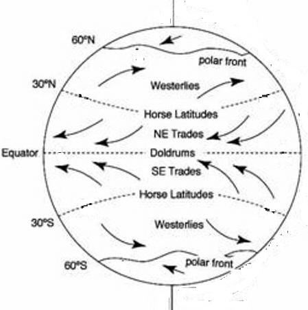

―Also mention in the Book the case of Idris: He was a man of truth (and sincerity), (and) a prophet. And We raised him to a lofty station‖ [Al Quran 19:56-57]
- কিতাবে ইদ্রিসের ঘটনাও উল্লেখ করুন: তিনি ছিলেন একজন সত্যবাদী (এবং আন্তরিক) একজন নবী। এবং আমরা তাকে একটি উচ্চ মর্যাদায় উন্নীত করেছি” [আল কুরআন 19:56-57]
The Book of Enoch was once part of the Holy Bible but was later discarded. This ancient text has been transmitted through different languages, likely deviating greatly from the original. In fact, it may not even be the Book of Enoch at all. However, the verses from the Book of Enoch state that the giants died as a result of mutual slaughter (war): ―Let them perish by mutual slaughter; for length of days shall not be theirs…[Chapter-10, Book of Enoch]‖ We find compatible story in Hindu Mythology: The Pandavas were the sons of Queen Kunti, but they were not born from her husband; she begot them from gods who came down from the sky. In the Book of Enoch, these gods are likely referred to as the 'sons of the sky.' They were, in fact, jinns. In the great war of the Mahabharata, the Pandavas killed the Kauravas, who had been genetically corrupted by jinns through their father. Their father, King Dhritarashtra, was conceived by their grandmother through an occult technique after the death of her grandfather. There were giants in Europe as well, and they perished during Noah's flood, as described in the Holy Bible:
এনোক বইটি একসময় পবিত্র বাইবেলের অংশ ছিল কিন্তু পরে তা বাতিল করা হয়। এই প্রাচীন পাঠ্যটি বিভিন্ন ভাষার মাধ্যমে প্রেরণ করা হয়েছে, সম্ভবত মূল থেকে ব্যাপকভাবে বিচ্যুত। আসলে, এটি এমনকি হনোকের বইও নাও হতে পারে। যাইহোক, ইনোকের বইয়ের আয়াতগুলি বলে যে দৈত্যরা পারস্পরিক বধের (যুদ্ধের ফলে) মারা গিয়েছিল: - পারস্পরিক বধের মাধ্যমে তাদের ধ্বংস হোক; দিনের দৈর্ঘ্য তাদের হবে না... [অধ্যায়-10, এনোকের বই] ‖ আমরা হিন্দু পুরাণে সামঞ্জস্যপূর্ণ গল্প পাই: পাণ্ডবরা রাণী কুন্তীর পুত্র, কিন্তু তারা তার স্বামীর থেকে জন্মগ্রহণ করেননি; তিনি আকাশ থেকে নেমে আসা দেবতাদের থেকে তাদের জন্ম দিয়েছেন। হনোকের বইতে, এই দেবতাদের সম্ভবত 'আকাশের পুত্র' হিসেবে উল্লেখ করা হয়েছে। আসলে তারা ছিল জ্বীন। মহাভারতের মহাযুদ্ধে, পাণ্ডবরা কৌরবদের হত্যা করেছিল, যারা তাদের পিতার মাধ্যমে জিনদের দ্বারা বংশগতভাবে কলুষিত হয়েছিল। তাদের পিতা, রাজা ধৃতরাষ্ট্র, তার দাদার মৃত্যুর পর একটি গুপ্ত কৌশলের মাধ্যমে তাদের ঠাকুরমা গর্ভধারণ করেছিলেন। ইউরোপেও দৈত্য ছিল, এবং তারা নোহের বন্যার সময় মারা গিয়েছিল, যেমন পবিত্র বাইবেলে বর্ণিত হয়েছে:
―When people began to increase on the earth and daughters were born to them, the Sons of God (sons of sky / jinns) saw that men's daughters were very beautiful, so they married those they chose. Yahweh (God) then said, "My spirit will not remain in man forever, for he is flesh. His span of life will be one hundred and twenty years." At that time there were giants on the earth. And afterwards as well, when the Sons of God (sons of the sky / jinns) went to the daughters of men and had children by them. These were the heroes of old, men of renown. Yahweh (God) saw how great was the wickedness of man on the earth and that evil was always the only thought of his heart. Yahweh regretted having created man on the earth and his heart grieved. He said, "I will destroy man whom I created and blot him out from the face of the earth, as well as the beasts, creeping creatures and birds, for I am sorry I made them." But Noah was pleasing to God‖ [Genesis 6:1-8, Holy Bible] [In the verses above, the term "Sons of God" is a mistranslation. The Book of Enoch refers to them as "sons of the sky," which is more acceptable. "Sons of the sky" implies "sons of this universe," which refers to "jinns."] In light of the Quran, it is possible that offspring shared by satanic jinns may still be produced even today:
- যখন পৃথিবীতে মানুষ বাড়তে শুরু করে এবং তাদের কন্যাদের জন্ম হয়, তখন ঈশ্বরের পুত্ররা (আকাশের পুত্র / জ্বিন) দেখেন যে পুরুষদের কন্যারা খুব সুন্দর, তাই তারা তাদের পছন্দ করে তাদের বিয়ে করেছিল। ইয়াহওয়ে (ঈশ্বর) তখন বললেন, "মানুষের মধ্যে আমার আত্মা চিরকাল থাকবে না, কারণ সে মাংসপিণ্ড। তার আয়ু হবে একশত বিশ বছর।" তখন পৃথিবীতে দৈত্য ছিল। এবং পরবর্তীকালে, যখন ঈশ্বরের পুত্ররা (আকাশের পুত্র / জিন) পুরুষদের কন্যাদের কাছে গিয়েছিলেন এবং তাদের দ্বারা সন্তান হয়েছিল। এরা ছিল পুরাতনের নায়ক, খ্যাতিমান পুরুষ। যিহোবা (ঈশ্বর) দেখলেন পৃথিবীতে মানুষের দুষ্টতা কত বড় এবং সেই মন্দ সর্বদা তার হৃদয়ের একমাত্র চিন্তা ছিল। পৃথিবীতে মানুষ সৃষ্টি করার জন্য যিহোবা অনুশোচনা করেছিলেন এবং তার হৃদয় দুঃখিত হয়েছিল। তিনি বলেছিলেন, "আমি মানুষকে ধ্বংস করব যাকে আমি সৃষ্টি করেছি এবং তাকে পৃথিবীর মুখ থেকে মুছে ফেলব, সেইসাথে পশুপাখি, লতানো প্রাণী এবং পাখিদের, কারণ আমি দুঃখিত যে আমি তাদের তৈরি করেছি।" কিন্তু নোহ ঈশ্বরের কাছে খুশি ছিলেন” [জেনেসিস 6:1-8, পবিত্র বাইবেল] [উপরের আয়াতগুলিতে, "ঈশ্বরের পুত্র" শব্দটি একটি ভুল অনুবাদ। ইনোকের বই তাদের "আকাশের পুত্র" হিসাবে উল্লেখ করেছে যা আরও গ্রহণযোগ্য। "আকাশের পুত্র" বলতে "এই মহাবিশ্বের পুত্র" বোঝায়, যা "জিনদের" বোঝায়।] কুরআনের আলোকে, এটা সম্ভব যে শয়তান জিনদের দ্বারা ভাগ করা বংশধর আজও উত্পাদিত হতে পারে:
―Said: ―Go thy way; if any of them follow thee, verily, hell will be the recompense of you—an ample recompense. And arouse those whom thou can among them with thy voice, make assaults on them with thy cavalry and thy infantry, mutually share with them wealth and children, and make promises to them.‖ But Satan promises them nothing but deceit‖ [Al Quran 17:63-64]
-বলল, তোমার পথে যাও; যদি তাদের কেউ তোমাকে অনুসরণ করে, তবে জাহান্নাম হবে তোমার প্রতিদান-প্রচুর প্রতিদান। এবং তাদের মধ্যে যাদেরকে আপনি আপনার কণ্ঠে জাগিয়ে তুলতে পারেন, আপনার অশ্বারোহী এবং আপনার পদাতিক দিয়ে তাদের উপর আক্রমণ করুন, তাদের সাথে পারস্পরিকভাবে সম্পদ ও সন্তান-সন্ততি ভাগ করুন এবং তাদের সাথে প্রতিশ্রুতি দিন। কিন্তু শয়তান তাদের প্রতারণা ছাড়া আর কিছুই দেয় না" [আল কুরআন 17:63-64]
Allah protects a Muslim, allowing a satanic jinni only to whisper to him. However, a jinni can possess an idolater, and if this idolater lives with a woman and they produce a child, the child may be considered "shared" by the jinni. However, the child remains a normal human being; he is not impure—his DNA is unaffected. The genetic deformation that produced giants in the past occurred only when jinns directly conceived children through human women. This does not occur in the present. However, some Christian thinkers are concerned about the Nephilim, whom they believe to be children of aliens (interpreted as jinns) born to human women. They think that the Nephilim possess greater intelligence and may conspire against humans, leading them toward lives of sin. Ultimately, everything belongs to Allah. Therefore, as soon as a person declares that there is no god but Allah and prostrate before Him, he is purified in all respects, whether he is a Nephilim, a giant, or a child of fornication. Allah is Just and Merciful. He says, ―Be,‖ and it is! Now, regarding the verses under discussion: ―Behold! We told you that your Lord does encompass mankind round about…‖ signifies that Allah protects humans from the tribe of Satan. However, Allah is not our security guard; if a person denies Him and turns to idolatry, Allah may lift His protection, allowing a satanic jinni to possess him. Humans are under test, as the next part of the verse states: ―…We granted the vision, which We showed you— but as a trial for men, and the Cursed Tree (mentioned) in the Qur'an…‖ The test necessitates means in which the Cursed Tree (the Tribe of Satan) is involved—if a human fails the test, the jinns become the winners. Allah is the creator of everyone and does not take sides. If humans are shown a miraculous sign, the Tribe of Satan also deserves an equal opportunity to deceive them. The jinns are intelligent and powerful creatures. They can fly through the skies and have long lifespans—some may even live for thousands of years. A jinni cannot be killed before the length of life determined by Allah has been completed. Therefore, it is difficult for angels to control them. The angels instill terror in them, but it only increases their excessive transgression, as the verses state: ―…and We put terror into them, but it only increases their inordinate transgression!‖ Therefore, the Prophet (pbuh) is instructed not to pray for a miraculous sign.
আল্লাহ একজন মুসলমানকে রক্ষা করেন, একজন শয়তান জিনিকে শুধুমাত্র তার কাছে ফিসফিস করার অনুমতি দেন। যাইহোক, একজন জিনি একজন মূর্তিপূজার অধিকারী হতে পারে, এবং যদি এই মূর্তিপূজক কোন মহিলার সাথে বসবাস করে এবং তারা একটি সন্তান জন্ম দেয়, তাহলে শিশুটি জিন্নিদের দ্বারা "ভাগ" হিসাবে বিবেচিত হতে পারে। যাইহোক, শিশুটি একটি সাধারণ মানুষ থেকে যায়; তিনি অপবিত্র নন-তার ডিএনএ প্রভাবিত নয়। জিনগত বিকৃতি যা অতীতে দৈত্যদের উৎপন্ন করেছিল তা তখনই ঘটেছিল যখন জিনরা সরাসরি মানব মহিলাদের মাধ্যমে সন্তান ধারণ করেছিল। বর্তমান সময়ে এটি ঘটে না। যাইহোক, কিছু খ্রিস্টান চিন্তাবিদ নেফিলিম সম্পর্কে উদ্বিগ্ন, যাদেরকে তারা মানব নারীদের জন্মগ্রহণকারী এলিয়েন (জিন হিসাবে ব্যাখ্যা করা) সন্তান বলে বিশ্বাস করে। তারা মনে করে যে নেফিলিমদের বুদ্ধিমত্তা বেশি এবং তারা মানুষের বিরুদ্ধে ষড়যন্ত্র করতে পারে, তাদেরকে পাপের জীবনের দিকে নিয়ে যেতে পারে। শেষ পর্যন্ত সবকিছুই আল্লাহর। অতএব, যত তাড়াতাড়ি একজন ব্যক্তি ঘোষণা করে যে আল্লাহ ছাড়া কোন উপাস্য নেই এবং তাকে সেজদা করে, সে নেফিলিম, দৈত্য বা ব্যভিচারের সন্তান হোক না কেন, সে সব দিক থেকে পবিত্র হয়ে যায়। আল্লাহ ন্যায়পরায়ণ ও করুণাময়। তিনি বলেন, 'হও' এবং তা হল! এখন, আলোচ্য আয়াত সম্পর্কে: -দেখুন! আমরা আপনাকে বলেছিলাম যে আপনার পালনকর্তা মানবজাতিকে চারপাশে ঘিরে রেখেছেন...” এর অর্থ আল্লাহ মানুষকে শয়তানের গোত্র থেকে রক্ষা করেন। যাইহোক, আল্লাহ আমাদের নিরাপত্তারক্ষী নন; যদি একজন ব্যক্তি তাকে অস্বীকার করে এবং মূর্তিপূজার দিকে মনোনিবেশ করে, তাহলে আল্লাহ তার সুরক্ষা তুলে নিতে পারেন, একটি শয়তানী জিনিকে তাকে অধিকার করার অনুমতি দেয়। মানুষ পরীক্ষার মধ্যে রয়েছে, যেমন আয়াতের পরবর্তী অংশে বলা হয়েছে: “…আমরা দর্শন দিয়েছিলাম, যা আমরা তোমাকে দেখিয়েছি—কিন্তু মানুষের জন্য পরীক্ষা হিসেবে, এবং কুরআনে অভিশপ্ত গাছ (উল্লেখিত)…” পরীক্ষার প্রয়োজন মানে যার মধ্যে অভিশপ্ত গাছ (শয়তানের গোত্র) জড়িত—যদি একজন মানুষ পরীক্ষায় ব্যর্থ হয়, তাহলে সে বিজয়ী হয়। আল্লাহ সকলের স্রষ্টা এবং পক্ষ নেন না। যদি মানুষকে একটি অলৌকিক চিহ্ন দেখানো হয়, তাহলে শয়তানের গোত্রও তাদের প্রতারণা করার সমান সুযোগ পাওয়ার যোগ্য। জিনরা বুদ্ধিমান এবং শক্তিশালী প্রাণী। তারা আকাশের মধ্য দিয়ে উড়তে পারে এবং দীর্ঘ জীবনযাপন করতে পারে - কিছু এমনকি হাজার বছর বেঁচে থাকতে পারে। আল্লাহর নির্ধারিত আয়ু পূর্ণ হওয়ার আগে জিনিকে হত্যা করা যায় না। অতএব, ফেরেশতাদের জন্য তাদের নিয়ন্ত্রণ করা কঠিন। ফেরেশতারা তাদের মধ্যে ভীতি সঞ্চার করে, কিন্তু এটি তাদের অত্যধিক সীমালংঘনকে বাড়িয়ে দেয়, যেমন আয়াতে বলা হয়েছে: "…এবং আমরা তাদের মধ্যে ত্রাস সৃষ্টি করি, কিন্তু এটি তাদের অত্যধিক সীমালঙ্ঘনকে বৃদ্ধি করে!” তাই, নবী (সাঃ) কে নির্দেশ দেওয়া হয়েছে একটি অলৌকিক নিদর্শনের জন্য প্রার্থনা না করার জন্য।
Behold! We said to the angels, "Prostrate unto Adam". They prostrated, except Iblis. He said, "Shall I prostrate to one whom You did create from clay?" He said, "See You? This is the one whom You have honored above me! If You will but respite me to the Day of Judgment, I will surely bring his descendants under my sway—all but a few!" Said, "Go your way; if any of them follow you, verily, hell will be the recompense of you—an ample recompense. And befool them gradually those whom you can among them with your voice, make assaults on them with your cavalry and your infantry, mutually share with them wealth and children, and make promises to them—but Satan promises them nothing but deceit—as for My servants, no authority shall you have over them." Enough is your Lord for a Disposer of affairs.
দেখো! আমরা ফেরেশতাদের বললাম, আদমকে সেজদা কর। তারা সিজদা করল, ইবলিস ছাড়া। তিনি বললেন, আমি কি তাকে সেজদা করব যাকে তুমি মাটি থেকে সৃষ্টি করেছ? তিনি বললেন, "দেখতে হবে? ইনি সেই ব্যক্তি যাকে আপনি আমার উপরে সম্মানিত করেছেন! আপনি যদি বিচারের দিন পর্যন্ত আমাকে অবকাশ দেন তবে আমি অবশ্যই তার বংশধরদেরকে আমার অধীনে আনব - অল্প কয়েকজন ছাড়া!" বললেন, "তোমার পথে যাও; যদি তাদের কেউ তোমাকে অনুসরণ করে, তাহলে তোমার জন্য জাহান্নাম হবে-প্রচুর প্রতিদান। এবং ধীরে ধীরে তাদের মধ্যে যাদেরকে তুমি তোমার আওয়াজ দিয়ে বোকা বানিয়ে ফেলো, তোমার অশ্বারোহী ও পদাতিক বাহিনী দিয়ে তাদের উপর আক্রমণ করো, তাদের সাথে পরস্পর ধন-সম্পদ ও সন্তান-সন্ততি ভাগাভাগি করো, এবং তাদের কাছে প্রতিশ্রুতি দাও না, কেবলমাত্র আমার দাসত্বের প্রতিশ্রুতি ছাড়া আর কিছুই নয়। তুমি কি তাদের উপর থাকবে।" আপনার রবই কার্য পরিচালনার জন্য যথেষ্ট।
Your Lord is He that drives the ship for you through the sea in order that you may seek of his bounty. Truly, He is unto you Most Merciful. Remarks:
তোমাদের পালনকর্তা তিনিই যিনি তোমাদের জন্য সমুদ্রের মধ্য দিয়ে জাহাজ চালান যাতে তোমরা তাঁর অনুগ্রহ অন্বেষণ করতে পার। নিশ্চয়ই তিনি তোমাদের প্রতি পরম করুণাময়। মন্তব্য:
The verse refers to ancient times when ships were driven by the wind. In the age of sail, a ship's captain would choose a course that followed favorable winds. The trade winds played a crucial role in developing European empires.
আয়াতটি প্রাচীন যুগকে নির্দেশ করে যখন জাহাজগুলি বাতাস দ্বারা চালিত হত। পাল তোলার যুগে, একজন জাহাজের ক্যাপ্টেন এমন একটি পথ বেছে নিতেন যা অনুকূল বাতাস অনুসরণ করে। বাণিজ্য বায়ু ইউরোপীয় সাম্রাজ্যের বিকাশে একটি গুরুত্বপূর্ণ ভূমিকা পালন করেছিল।
FIGURE 17.6: Wind

চিত্র 17_6 / Figure 17_6
চিত্র 17.6: বাতাস
চিত্র 17_6 / Figure 17_6
These trade winds are easterly surface winds found along the equator, blowing from the northeast in the Northern Hemisphere and from the southeast in the Southern Hemisphere. The plan for a voyage would rely on the regular trade winds, westerly winds, and smaller circular winds. On many routes, these winds are further assisted by regular ocean currents. The movement of air and water is complex, sustained and controlled by Allah in a way that serves humanity's benefit.
এই বাণিজ্য বায়ুগুলি নিরক্ষরেখা বরাবর পাওয়া পূর্বের পৃষ্ঠীয় বায়ু, যা উত্তর গোলার্ধে উত্তর-পূর্ব থেকে এবং দক্ষিণ গোলার্ধে দক্ষিণ-পূর্ব দিক থেকে প্রবাহিত হয়। একটি সমুদ্রযাত্রার পরিকল্পনা নিয়মিত বাণিজ্য বায়ু, পশ্চিমী বায়ু এবং ছোট বৃত্তাকার বায়ুর উপর নির্ভর করবে। অনেক রুটে, এই বায়ুগুলি নিয়মিত সমুদ্র স্রোত দ্বারা আরও সহায়তা করে। বায়ু এবং জলের চলাচল জটিল, টেকসই এবং আল্লাহর দ্বারা নিয়ন্ত্রিত এমনভাবে যা মানবতার উপকারে আসে।
When distress seizes you at sea those that you call upon besides Himself leave you in the lurch! But when He brings you back safe to land, you turn away; most ungrateful is man! Do you then feel secure that He will not cause you to be swallowed up beneath the earth when you are on land, or that He will not send against you a violent tornado so that you shall find no one protector? Or do you feel secure that He will not send you back a second time to sea and send against you a heavy gale to drown you because of your ingratitude so that you find no helper therein against Us?
সমুদ্রে যখন বিপদে আপন আপন আপন ব্যতীত যাহাকে ডাকে, তাহারা আপনাকে ছিন্নভিন্ন করিবে! অতঃপর যখন তিনি তোমাদের নিরাপদে স্থলে ফিরিয়ে আনেন, তখন তোমরা মুখ ফিরিয়ে নিও। সবচেয়ে অকৃতজ্ঞ হল মানুষ! তাহলে কি আপনি নিরাপদ বোধ করেন যে, আপনি যখন স্থলে থাকবেন তখন তিনি আপনাকে মাটির নিচে গ্রাস করবেন না, অথবা তিনি আপনার বিরুদ্ধে এমন হিংস্র টর্নেডো পাঠাবেন না যাতে আপনি কাউকে রক্ষাকারী পাবেন না? অথবা আপনি কি নিরাপদ বোধ করেন যে তিনি আপনাকে দ্বিতীয়বার সমুদ্রে ফেরত পাঠাবেন না এবং আপনার অকৃতজ্ঞতার কারণে আপনাকে ডুবিয়ে দেওয়ার জন্য একটি প্রবল ঝড় পাঠাবেন যাতে আপনি সেখানে আমাদের বিরুদ্ধে কোন সাহায্যকারী পাবেন না?
Sinkholes and tornadoes occur due to natural causes, and nature is sustained by Allah. Each natural phenomenon has a purpose. Allah may use these natural events to punish some while sparing others.
সিঙ্কহোল এবং টর্নেডো প্রাকৃতিক কারণে ঘটে এবং প্রকৃতি আল্লাহর দ্বারা টিকিয়ে রাখে। প্রতিটি প্রাকৃতিক ঘটনার একটি উদ্দেশ্য আছে। আল্লাহ এই প্রাকৃতিক ঘটনাগুলোকে ব্যবহার করতে পারেন কাউকে শাস্তি দেওয়ার জন্য এবং অন্যকে বাঁচানোর জন্য।
FIGURE 17.7: Swallowing Earth- Sinkhole FIGURE 17.8: Tornado
চিত্র 17_7 / Figure 17_7
চিত্র 17.7: পৃথিবী গ্রাস করছে- সিঙ্কহোল চিত্র 17.8: টর্নেডো
চিত্র 17_7 / Figure 17_7
We have honored the sons of Adam, provided them with transport on land and sea, given them for sustenance things good and pure, and conferred on them special favors above a great part of our creation. On the day We shall call together all human beings with their Imams, those who are given their record in their right hand will read it, and they will not be dealt with unjustly in the least, but those who were blind in this world, will be blind in the hereafter and most astray from the Path. And their purpose was to tempt you away from that, which We had revealed unto you, to substitute in our name something quite different, and then they would certainly have taken you a friend; and had We not given you strength, you would nearly have inclined to them a little—in that case, We should have made you taste double portion in this life and an equal portion in death, and moreover, you would have found none to help you against Us! Their purpose was to scare you off the land in order to expel you, but in that case, they would not have stayed after you, except for a little while—way with the apostles We sent before you; you will find no change in Our ways.
আমরা আদম সন্তানদের সম্মানিত করেছি, তাদের স্থলে ও সমুদ্রে যাতায়াতের ব্যবস্থা করেছি, তাদেরকে উত্তম ও বিশুদ্ধ জীবিকা দান করেছি এবং তাদেরকে আমাদের সৃষ্টির এক বিরাট অংশের উপরে বিশেষ অনুগ্রহ দান করেছি। যেদিন আমরা সমস্ত মানুষকে তাদের ইমামদের সাথে একত্র করব, যেদিন তাদের ডান হাতে তাদের আমলনামা দেওয়া হবে তারা তা পড়বে এবং তাদের সাথে সামান্যতমও অবিচার করা হবে না, তবে যারা এই দুনিয়ায় অন্ধ ছিল তারা পরকালে অন্ধ এবং পথ থেকে বিপথগামী হবে। আর তাদের উদ্দেশ্য ছিল তোমাকে প্রলুব্ধ করা, যা আমরা তোমার প্রতি নাযিল করেছিলাম, আমাদের নামে ভিন্ন কিছুর প্রতিস্থাপন করতে, এবং তখন তারা অবশ্যই তোমাকে বন্ধু হিসেবে গ্রহণ করত। আর যদি আমরা তোমাকে শক্তি না দিতাম, তবে তুমি তাদের প্রতি কিছুটা ঝুঁকে পড়তে, সেক্ষেত্রে, আমরা তোমাকে পার্থিব জীবনে দ্বিগুণ অংশ এবং মৃত্যুতে সমান অংশের স্বাদ আস্বাদন করাতে পারতাম, এবং অধিকন্তু, তুমি আমাদের বিরুদ্ধে সাহায্যকারী কাউকে পেতে না! তাদের উদ্দেশ্য ছিল আপনাকে দেশ থেকে ভীতি প্রদর্শন করা যাতে আপনাকে বহিষ্কার করা যায়, কিন্তু সেক্ষেত্রে, তারা আপনার পরে থাকতে পারত না, অল্প সময়ের জন্য - আমি আপনার আগে যে রসূলদের পাঠিয়েছিলাম তাদের সাথে; আপনি আমাদের পথে কোন পরিবর্তন পাবেন না।
Establish Salat at the sun's decline till the darkness of the night and recite the Qur'an in the early dawn. Verily, the recital of dawn is witnessed. And as for the night, keep awake a part of it, an additional prayer for you; soon will your Lord raise you to a Station of Praise and Glory!
রাতের আঁধার পর্যন্ত সূর্যাস্তের সময় নামাজ কায়েম কর এবং ভোরবেলা কোরআন তেলাওয়াত কর। নিঃসন্দেহে ভোরের তেলাওয়াত প্রত্যক্ষ করা হয়। আর রাতের বেলায় জাগ্রত থাকো তার কিছু অংশ, তোমার জন্য একটি অতিরিক্ত দোয়া। শীঘ্রই আপনার পালনকর্তা আপনাকে প্রশংসা ও গৌরবের মঞ্চে উন্নীত করবেন।
The above verse is discussed in Section-13 of Chapter-11.
উপরের আয়াতটি অধ্যায়-11-এর ধারা-13-এ আলোচনা করা হয়েছে।
Say: "O my Lord! Let my entry be by the Gate of Truth and Honour, and likewise my exit by the Gate of Truth and Honor and grant me from You an authority to aid." And say: "Truth has arrived and Falsehood perished; for Falsehood is bound to perish."
বলুন: "হে আমার পালনকর্তা! আমার প্রবেশ সত্য ও সম্মানের দরজা দিয়ে হোক এবং একইভাবে সত্য ও সম্মানের দরজা দিয়ে আমার প্রস্থান হোক এবং আপনার কাছ থেকে আমাকে সাহায্য করার ক্ষমতা দিন।" এবং বল: "সত্য এসেছে এবং মিথ্যা ধ্বংস হয়ে গেছে; কারণ মিথ্যা ধ্বংস হতে বাধ্য।"
Segment 4 Conclusion
সেগমেন্ট 4 উপসংহার
We send down in the Qur'an that, which is a healing and a mercy to those who believe; to the unjust it causes nothing but loss after loss—yet when We bestow Our favors on man, he turns away and becomes remote on his side; and when evil seizes him, he is in great despair! Say: "Everyone acts according to his own disposition. But your Lord knows best who it is that is best guided on the Way." They ask you concerning the Soul (Ruh). Say: "Ruh is command of my Lord; of knowledge it is only a little that is communicated to you"
আমরা কুরআনে তা নাযিল করি, যা ঈমানদারদের জন্য নিরাময় ও রহমত। অন্যায়কারীর কাছে ক্ষতির পর ক্ষতি ছাড়া আর কিছুই হয় না-তবুও যখন আমি মানুষের প্রতি আমাদের অনুগ্রহ দান করি, তখন সে মুখ ফিরিয়ে নেয় এবং তার পক্ষে দূরে সরে যায়। আর যখন মন্দ তাকে পাকড়াও করে, তখন সে ভীষণ হতাশ হয়! বলুনঃ প্রত্যেকে নিজ নিজ স্বভাব অনুযায়ী কাজ করে। কিন্তু আপনার পালনকর্তাই ভালো জানেন কে সেই পথের পথপ্রদর্শক। তারা আপনাকে রূহ (রূহ) সম্পর্কে জিজ্ঞাসা করে। বলুন: "রূহ আমার প্রভুর আদেশ; জ্ঞানের সামান্যই তোমাদেরকে জানানো হয়।"